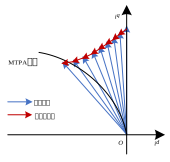

一种MTPA搜索法
创建于2021-5-17
该项目完成于2021-5，原创
该项目完成于2021-5，原创
最大转矩电流比（MTPA）控制可以使电机输出转矩一定的情况下，保证电流最小，从而可以降低电机损耗，提高电机效率。MTPA控制通常需要电机的参数信息，比如电感大小、永磁体磁链等，但实际应用中，常常很难获得准确的电机参数，从而导致根据电机参数计算出的MTPA曲线与实际的MTPA曲线之间有一定偏差。在线MTPA算法通常向电机中注入电流或电压信号，根据注入信号产生的功率或者转矩波动情况，判断电机运行状态，然后调整d轴电流给定或者电流矢量角度，从而达到MTPA工作点。在线MTPA对参数依赖性小，但其实现可能较为复杂，运算量较大。本项目开发了一种MTPA搜索法，这也是一种在线MTPA算法，本次开发的MTPA搜索法运算量小，而且效果较好，可以较为准确地搜索到MTPA工作点。
下图为搜索法示意图，当电机工作点远离MTPA曲线时，工作点会向着MTPA曲线运动，最终达到MTPA曲线附近，然后来回波动。当搜索步长较小时，达到MTPA曲线附近后，工作点的波动幅度会变小，但搜索速度也会变慢。当负载发生变化时，需要从一个工作点搜索至另一个工作点，同样需要一定的时间。如果搜索速度太慢，当负载突然变大，可能会引起系统不稳定。

本项目开发的MTPA搜索法，可以实现负载变化时对MTPA工作点的快速搜索，提高了搜索速度的同时，也可以避免因负载突变导致的不稳定情况。